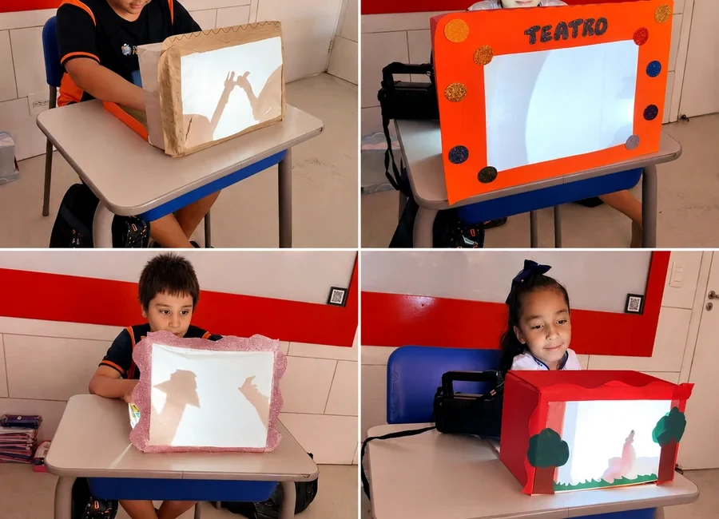

Base para aprender com segurança.
Nos Anos Iniciais, a criança constrói fundamentos que sustentam toda a vida escolar: leitura, escrita, raciocínio lógico, interpretação, convivência, rotina e confiança para aprender.
O aluno desenvolve
Leitura · Escrita · Raciocínio lógico · Oralidade · Hábitos de estudo
O Perini acompanha
Adaptação, participação, avanços, dificuldades e construção da rotina escolar.
O COC apoia
Material didático por etapa, recursos digitais e atividades estruturadas para organizar a aprendizagem.
A criança não apenas aprende conteúdos. Ela aprende a se organizar, participar e confiar no próprio processo de aprendizagem.